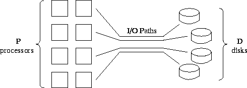

![[DBPP]](pictures//asm_color_tiny.gif)


![[Search]](pictures//search_motif.gif)
An important determinant of performance in many parallel programs is the time required to move data between memory and secondary storage, that is, the time required for input/output (I/O). Applications with substantial I/O requirements include the following.
It is difficult to provide a general discussion of parallel I/O because different parallel computers have radically different I/O architectures and hence parallel I/O mechanisms. However, we can make several points that have wide applicability.
We can often gain a reasonable understanding of the cost of an I/O operation by thinking of it as a communication from the processors that perform that operation to one or more disks. The cost of a disk I/O operation can be approximated by a startup cost and a per-word transfer cost in much the same way as an interprocessor communication. (However, the startup cost is typically much greater.) As in interprocessor communication, the keys to good performance are to maximize the utilization of available paths and to minimize startups.

Figure 3.22: I/O architecture of an idealized parallel computer.
P
processors are connected by multiple I/O channels to
D
disks.
If a computer has only a single disk or if multiple disks are connected to a single processor, little can be done to optimize I/O performance. However, in practice most parallel computers provide multiple paths from processors to disk, whether by providing distinct ``I/O nodes'' or by connecting disks directly to processors (Figures 3.22). On architectures of this sort, we seek to organize I/O operations so that multiple processors read and write concurrently, using multiple paths. Thus, centralized I/O strategies that cause data to pass through a single processor are unlikely to be efficient and are certainly not scalable.
In addition to maximizing concurrency in I/O operations, we need to be concerned about the number of distinct read or write requests required to transfer data between disk and processor memory. This can often have a greater impact on I/O performance than can the amount of data transferred. The number of I/O requests depends partly on how data are distributed on disk and in memory. The distribution in memory will presumably be determined by the application; the distribution on disk either will be under programmer control or will be selected by the file system. Data may sometimes be ``striped'' (scattered) across available disks so as to reduce the probability of many processors attempting to read from the same disk simultaneously.
If distributions on disk and in memory differ, then a large number of reads or writes may be required in order to achieve data transfer. This problem is analogous to what happens when transferring data structures between two parallel program components that require different distributions. As will be discussed in Chapter 4, at least two approaches are possible in this situation: we can modify one or both components to use different distributions, or we can explicitly redistribute data before or while transferring it. Because I/O requests tend to be more expensive than interprocessor communications, it is often better to perform an explicit redistribution of data in memory so as to minimize the number of I/O requests. This leads to a two-phase access strategy, in which the data distributions used on disk and in memory are decoupled. The merits of these various approaches can be explored analytically with performance models.
© Copyright 1995 by Ian Foster